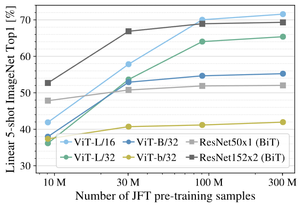

论文精读 ViT
3.ViT
论文链接：https://arxiv.org/abs/2010.11929
源码链接：https://github.com/rwightman/py
1.标题 + 简介
An image is worth 16*16 words
每一个方格都是 16 * 16 大小，图片有很多 16 * 16 方格 patches —> an image is worth 16 * 16 words
ViT：过去一年，CV 最有影响力的工作
- 推翻了 2012 Alexnet 提出的 CNN 在 CV 的统治地位
- 有足够多的预训练数据，NLP 的 Transformer 搬运到 CV，效果很好
- 打破 CV 和 NLP 的壁垒，给 CV、多模态 挖坑
ViT效果有多好，CV 任务刷榜，paperwithcode网站
- 霸榜 ImageNet （基于 ViT）
- COCO ,目标检测（Swin Transformer ICCV 21 best paper：多尺度的 ViT ）的模型
下图中的的四种情况 ViT 都能处理
遮挡、数据分布的偏移（纹理的去除）、鸟头部+对抗的patch、图片打散重新排列组合
2.摘要
Transformer 在 NLP 是基本操作，但 transformer 在 CV 的应用有限。
CV 里的 attention 是怎么用的呢？attention + CNN, or attention 替换 CNN components 但依然保持 CNN 整体结构。
本文怎么看 CV 里的 attention? attention 不用和 CNN 绑在一起，和 transformer 结合，在 CV 领域 大杀四方。
3.引言
3.1 self attention
self-attention 架构， esp Transformers，是 NLP 必选模型。主流方式是 BERT 提出的，大规模数据集预训练，在特定领域的小数据集做微调。 Transformer 的 计算高效和可扩展性，1000亿参数都还没有性能饱和的现象。
3.2 Transformer 应用在 CV 的难点
计算像素的 self-attention，序列长，维度爆炸
Trnasformer 的计算复杂度是 序列长度 n 的 平方 $O(n^2)$
224 分辨率的图片，有 50176 个像素点，（2d 图片 flatten）序列长度是 BERT 的近 100 倍。
CV 如何用 attention 呢？
（1）CNN 结构 + self-attention or attention 替代卷积
降低序列长度的方式：CVPR Wang et al. 2018, Local Network, 网络中的特征图 输入 Transformer
ResNet 50 最后一个 stage, res4 的 feature map 14 * 14， 196
（2）stand-alone attention 孤立自注意力
用 local window 局部小窗口 控制 transformer 的计算复杂度，有点像卷积，卷积也有 locality，局部窗口卷积。
（3）axial attention 轴注意力
2 个 1d 顺序操作，降低计算复杂度，图片的序列长度 n = H * W。
2d 矩阵 拆分为 2个1d 向量，先在 H 高度 dimension 做一次 self-attention，再 W 宽度 dimension 做一次 self-attention
replacing the convolutions entirely 好不好呢？
理论高效，但硬件无法加速 —\> 此类模型都还没有太大。
本段（第二段）总结：在大规模的图像识别上，ResNet 还是效果最好的。
3.3 ViT
（1）ViT做法
现状： attention 已经在 CV 领域有应用，甚至也有 attention 替代卷积的操作
标准 Transformer 直接应用于图片，做最少的修改，不做任何针对视觉任务的特定的改变。
把图片划分成很多 patches，每个 patch 元素 是 16 * 16，序列长度 14 * 14 = 196个元素
每一个 patch 经过一个 FC layer（fully connected layer）得到一个 linear embedding，patches 的 linear embeddings 是 Transformer 的输入。
一个 224 * 224 图片 变成一个 196 个的 16 * 16 图片块（words in NLP）。
（2）为什么 transformer 的训练是 supervised fashion？
NLP 的 Transformer 无监督训练 by language model LM or mask language model MLM；
CV 任务的 benchmark 使用有监督训练。
ViT 把 CV 任务当成 NLP 任务，模型使用的是 BERT, Transformer encoder 简洁框架。
（3）Transformer in CV，之前有人做吗？
ICLR 2020 从输入图片里抽取 2 * 2 patches。 2 * 2 size enough：CIFAR-10 32 * 32 图片，16 * 16 会过大。 抽好 patch 之后，在 patches 上 做 self-attention。 —> 技术上的 Vision Transformer
ViT 和 ICLR 2 * 2 patches 的区别？
- ViT证明了 大规模数据集预训练 （NLP 常用）之后的 Transformer，不需要做 针对视觉任务的 修改，比最好的 CNNs 效果差不多 or 甚至更好。
- 2 * 2 patches applicable only to small-resolution images, ViT handles medium-resolution images as well.
- ViT 告诉大家，Transformer 在 vision 领域能拓展到有多好。large 数据集 + large 模型，transformer 能否取代 CNN 地位？
（4）ViT 任何情况比CNN都强吗？
mid-sized datasets ImageNet without strong regularization，ViT 比 ResNet of comparable size 弱几个点。
Transformer 比 CNN 少 inductive biases 归纳偏置
CNN 有 locality 和 translation equivariance 归纳偏置，—> CNN 有 很多先验信息 —> 需要较少的数据去学好一个模型。
Transformer 没有这些先验信息，只能 从图片数据里，自己学习对 视觉世界 的感知。
inductive biases 归纳偏置：先验知识 or 提前的假设
CNN 的 inductive biases 是 locality（相似特征） 和 translation equaivariance（平移不变性 ）。
- locality: CNN用滑动窗口在图片上做卷积。假设是图片相邻的区域有相似的特征。i.e., 桌椅在一起的概率大，距离近的物品 相关性越强。
- translation equaivariance：$f (g(x)) = g( f(x) )$，f 和 g 函数的顺序不影响结果。
- f：卷积 g：平移; 无论先做平移 g 还是先做卷积 f , 最后结果一样。
怎么验证 Transformer 无 inductive bias 的假设？
在 1400万(ImageNet-21K) - 3000 万(JFT-300)得到图片数据集上预训练 trumps inductive bias, ViT +足够训练数据，CV SOTA。
VTAB 融合了 19 个数据集，检测模型的稳健性，ViT的 robustness 也很好。
3.4引言总结
第一段：Transformer 在 NLP 扩展的很好，没有因为大模型和大数据集而饱和，performance 一直有提升，Transformer 在 CV 里能不能也有大幅度的提升呢？
第二段：前人工作。这么好的 idea 有哪些人做过呢？要讲清楚自己的工作和 related works 的区别。之前的工作是 CNN + attention 或者 attention 替代 convolutions，没有工作将 transformer 用到 CV 领域，没有得到很好的扩展效果。
第三段：Vision Transformer 是 standard Transformer with the fewest possible modifications。图片变成 16 * 16 的像素块 patches，经过 一个 fc layer 得到的 linear embeddings 输入 transformer。ViT 融合了 CV 和 NLP 领域。
第四+五段：show 结果，足够多的数据集，ViT 能 SOTA
4.结论
直接 用 NLP 的 Transformer 来处理图片，和其它 self-attention in CV 的工作不同：除了 将图片转成 16 * 16 patches + 位置编码 之外，没有额外引入 图像特有的 inductive bias
没有图片的 inductive bias 的好处是什么？
不需要对 vision 领域的了解，不需要 domain knowledge，直接把 图片理解成 a sequence of patches, i.e., 一个句子里的很多单词。
新问题 —— CV 除了 image classfication 其他的任务，行不行呢？分割、检测
- DETR (Carion et al. 2020) 目标检测的力作，改变了目标检测 出框的方式。ViT 做其它 CV 任务应该效果也很好。
- ViT-FRCNN 检测 detection
- SETR 分割 segmentation
- （3个月后）Swin Transformer 融合 Transformer 和多尺度设计
Transformer 是 CV 领域的一个通用的骨干网络 backbone
另外一个未来工作方向，自监督的预训练方式。NLP 大的 transformer 模型使用 自监督 预训练，ViT有 initial experiments 证明 自监督预训练也可以，但和有监督的训练有差距 still large gap。
ViT 挖坑：
- 视觉领域 CV
- 多模态，一个 transformer 处理 CV 和 NLP问题
5.相关工作
5.1 Transformer
Transformer 在 NLP 领域的应用：BERT, GPT
- Transformer 先在大规模语料库上做预训练，再根据具体的任务数据集进行微调。
- BERT： denosing mask挖词、完形填空，把masked的词预测出来
- GPT：language modelling, 预测下一个词 next word prediction
- 自监督的训练方式：完形填空 or 预测下一个词，人为设定。语料句子是完整的，去掉某些词（完形填空） or 最后词（预测下一个词）
5.2 self-attention 在视觉领域的应用
用图片的所有像素做Transformer会产生复杂度爆炸的问题，Transformer的复杂度是输入维度的平方（$O(n^2 )$）
self-attention to each image with approximations：
- 不用整张图，只用 local neighborhoods，降低序列长度
sparse transformer
- 全局注意力的近似
- 只对 稀疏的点 做注意力
scale attention by applying attention in blocks of varying size
- 把自注意力用到不同大小的 blocks
- in the extreme case only along individual axes 极端情况，只关心轴， axial self-attention，横轴 + 纵轴
小结：以上 self-attention + CV 效果不错，但工程实现加速很难。可在 cpu gpu跑，但大规模训练不行。
5.3 和 ViT 最相似的工作：
（1）ICLR 2020 2 * 2 patches for CIFAR-10 32 * 32 图片
ViT 胜在哪里: 更大的 patches 16 *16 + 更大的训练数据集
CV 中 检测、分类、视频处理、多模态 self-attention with CNNs
（2）image GPT
GPT 是 NLP 的生成模型，image GPT 无监督预训练，生成模型。
image GPT 也用了 transformer 图片（降低分辨率和 color space）。用训练好的 image GPT or 直接把 image GPT 当成特征提取器， ImageNet 准确率 72%；ViT ImageNet 准确率 88.5%
（3）最近爆火的 MAE
在 BEiT 或 MAE 论文之前，生成式网络 在 CV 比 判别式网络 弱很多。
MAE 生成式模型 在 ImageNet-1k 做训练，比判别式模型好。分类，目标检测 （transfer learning）都有不错的效果。
6.ViT模型
ViT 尽可能使用 original Transformer，享受 Transformer 的高效实现。
6.1 Vision Transformer
（1）Model
ViT 对 图片的操作： 划分 patches，flatten patches 的线性投影 + patches 的位置信息，得到输入 transformer 的 tokens
如何分类：借鉴 BERT，插入一个特殊的字符 * [CLS]，用于分类。* [CLS]也有 position embedding, 0(永远是0)。* [CLS] 输入 一个通用的 MLP Head，得到 Class，cross-entropy 损失函数训练模型。
图像示例（维度变化），以224*224输入图像为例：
- **图片 **$X$：
224 * 224 * 3(RGB, 3 channels) - $ patches $**数 **$N$：
224 ^ 2 / 16 ^ 2 = 14 ^ 2 = 196 - 每一个 patch 的维度：
16 * 16 * 3 (RGB, 3 channels) = 768 - Linear Projection 全连接层 $E$输入：
768( 不变，patch 计算而来 ) * D(embedding_dim， 768 或 更大) - **Linear Projection 全连接层 **$E$输出：
X * E = patches (196 patches 个数 * 768 每个 patch 的维度) * E ( 768 * D ) = 196 * D (768) - position embedding向量维度：
1 * 768，通过sum加到输入信息中； - 进入Transformer Encoder维度：196 * 768(图片对应的 tokens) 拼接 concatenate [CLS] token (1 * 768) =
197 * 768 - ViT base MLA：
12 heads； - MLP：放大
4倍，再缩小到原维度大小 - Transfomer encoder 输入输出维度一致，可以直接叠加
L个
（2）ViT和CNN
class token：证明 标准的 transformer 做视觉，没问题！
ViT 除了标准的 transformer，关键部分是 怎么对图片进行预处理 和 怎么对图片最后的输出进行后处理。
控制和 NLP 的差异：使用 BERT 的 CLS，CLS 在 NLP 理解为 一个全局的对句子理解的特征；ViT 的 CLS 理解为 一个图像的整体特征。
- CLS token + MLP (tanh acitvation) == 分类
- CV 通常的 全局特征：(i.e., Res50) feature map (14 * 14) —> GAP globally average-pooling 全局平均池化 —> a flatten vector 全局的图片特征向量 —> MLP 分类
- CLS 可用 GAP global average pooling 替换
- CV 的 CLS GAP 和 NLP 的 CLS 效果差异不大**，为了和原始Transformer保持统一。** 但CLS-Token 和 GAP 的 适用参数 不一样。
位置编码： 1d、2d、 relative编码都相差不大，为了和原始Transformer保持一致，使用1D编码。
- 猜测相差不大原因：ViT 直接作用于 14 * 14 patches，而不是 224 * 224 像素。较少数量的 patches 之间的相对位置信息，容易学到。
（3）Inductive bias
CNN 的 inductive bias： locality 局部性、 translation equivalence 平移等变性。在 CNN 模型每一层都有所体现，模型的先验知识从头到尾，贯穿整个模型。
ViT 比 CNN 的 inductive bias 少, only MLP
ViT 的 inductive bias in images：图片 切成 patches；+ position embedding（随机初始化，没有携带 2d 位置信息）
ViT 的 patches 块的 2d 位置信息 + spatial relations 图像块之间的场景信息，都需要重新学。所以 ViT 没有很多 inductive bias，在中小型数据集训练 ViT 效果不如 CNN。
（4）Hybrid architecture
Transformer：全局建模能力强
CNN： data-efficient 不用那么多训练数据
前 CNN + 后 Transformer —> Hybrid archtecture
不同的图片预处理方式：不划分 patches，采用 CNN (Res50 的 feature map 14 * 14 = 196)，过全连接层 E Linear projections 得到图片的 embedding
ViT 的图片预处理方式**：** 把一张图划分成 patches，直接过全连接层 FC
6.2 Fine-tuning and higher resolution
（1）预训练好的 ViT 可以在更大尺寸的图片上微调吗？
if patch size 不变 16 * 16，更大尺寸的图片 —> 序列长度的增加；Transformer 理论上，可以处理任意长度。* But， *提前训练好的 position embedding 可能失效。
** (2) patches 数增多，如何使用已预训练好的位置编码吗？**
不可以。但可以使用2d 插值，增加位置编码的长度，但效果会掉点，是临时解决方案，ViT 微调时的一个局限。
- 2d 插值，torch 的 interpolate 函数实现；但也不是任意长度增加都能保持效果。
ViT 用了图片 2d 结构 的 inductive bias 地方：resolution adjustment 尺寸改变 和 patch extraction 抽 patches
7.实验
对比 ResNet, ViT, Hybrid ViT (CNN 特征图，不是图片直接 patch 化) 的 representation learning capabilities 表征学习能力。
为了了解每个模型预训练好 到底需要多少数据，在不同大小的数据集上预训练，然后在很多 benchmark tasks 做测试。
考虑模型预训练的计算成本时，ViT performs very favourably 表现很好， SOTA + fewer resource 训练时间更少；
ViT 的自监督训练，可行，效果也还不错，有潜力；一年之后，MAE 用自监督训练 ViT 效果很好。
数据集：
ImageNet-1K: 1000 classes, 1.3M imagesImageNet-21K: 21000 classes, 14M imagesJFG-300: 303M images Google 不开源- 下游任务：分类 CFIAR etc.
7.1 ViT model variants
模型变体 = (Base, Large, Hugh) + (patch size 表示)
ViT-L/16 使用 Large 参数 和 patch 16 * 16 输入
7.2 结果
和 CNN 的工作 BiT-L, Noisy Student 做对比
- BiT-L: CNN比较大的模型，ViT论文作者团队自己的工作
- Noisy Student: ImageNet 当时表现最好的方法。用 伪标签 pseudo-label 去 self-training
ViT-H/14 训练比 ViT-H/16 贵，效果和 BiT-L 差不多，优势不明显。怎么突出 ViT 的好呢？
ViT 训练更便宜。TPUv3 天数：ViT-H/14 2.5K, BiT-L 9.9K, Noisy Student 12.3K
ViT 优点：效果好 + 训练快
7.3 结果分析
（1）Vision Transformer 到底需要多少数据才能训练好？
图中灰色区域 ResNet 的效果，圆圈 ViT 的效果
如果想用 ViT，至少需要 ImageNet-21K 14M 大小的数据集
- 小于整个数据量，CNN 更合适，更好的利用 inductive bias，ViT 没有特别多 inductive bias 需要更多数据训练。
数据集规模比 ImageNet-21K 更大时，Vision Transformer 效果更好，因为可扩展性 scaling 更好。
（2）Linear few-shot evaluation

linear evalution：把 ViT 预训练好的模型 直接作为 特征提取器，不 fine-tune，+ 一个 logistic regression 得到分类结果。
Few-shot：5-shot，在 ImageNet 做 linear evaluation 时，每类图片随机选取 5 个 samples，evaluation 很快，做 消融实验。
linear few-shot evaluation 采用 JFT 数据集 10M, 30M, 100M, 300M。来自同一个数据集，数据没有 distribution gap，模型的效果更能体现 Vision Transformer 本身特质。
ViT 图中 效果 和 上图差不多。
如何用 ViT 做小样本学习，未来研究方向之一。
（3）用 ViT 比 CNNs 便宜
大家的印象：Transformer 又大又贵，很难训练
- average-5：ImageNet-real, Pets, Flower, CIFAR10, CIFAR100 平均
- ImageNet 单独的对比
同等计算复杂度：ViT 比 ResNet 效果好，印证了 ViT 训练更便宜
Q：Hybrid 模型，CNN 抽取出来的特征，能不能帮助 Transformer 更好的学习呢？
- 小模型，Hybrid 模型吸收 CNN 和 Transformer 的优点，效果好。不需要很多的数据预训练，达到 Transformer 的效果
- 大模型，Hybrid 模型 和 Transformer 差不多，甚至不如 Transformer 模型。
7.4 Inspecting Vision Transformer
可视化分析 ViT 内部表征 internal representations: Patch embedding, position embedding
（1）** Linear projection E **
ViT 第一层 Linear projection E 学到了什么？
embed RGB value 前 28 个主成分
Vision Transformer 和 CNN 学到的很像，类似 gabor filter 有颜色、纹理， 可以做 plausible basis functions，可以描述每个图像块的底层信息 a low-dimensional representation of the fine structure within each patch.
（2）Position embedding
Position embedding 能学到一些表示位置距离的信息
- patch 自己本身 相似度高 黄色 1
- 学到了距离的概念
- (4, 4) 黄色中心点，越边缘，相似度越低，颜色越蓝
- 学到了 行 和 列 的距离规则
- 同行同列，颜色条 的表示
虽然是 1d 的 position embedding，但已经学到了 2d 的图像位置概念；所以换成 2d position 提升不多。
（3）Self-attention 有没有起作用？
用 Transformer 的原因：自注意力 能模拟长距离的关系。
- NLP 一个很长的句子里，开头的一个词和结尾的一个词 可能互相有关联。
- CV 里 很远的两个像素点之间 也能做自注意力。
ViT 的 self-attention 是不是 很远的像素点也能有交互？
ViT-L/16 有 24 层（横坐标值），五颜六色的点：transformer 每层 multi-head 的heads，ViT-L 16 heads, 每一列有 16 个点
纵轴是 mean attention distance
$d{ab} = l{ab} A_{ab} = ab 两点 pixel 之间的距离差 ab 两点之间的attention ~weights$
d_ab 的大小，反映模型能不能注意到很远的 2 个 pixels
- self-attention 刚开始能注意到 10 - 110 pixels
- self-attention 刚开始就注意到全局的信息；CNN 刚开始第一层的感受野 receptive filed 很小，只能看到附近的 pixel
网络加深，模型学到的特征越来越 high level，越来越有语义信息，像素的自注意力距离 越来越远，不是靠邻近的像素点做判断。
证明 自注意力 有学到 很远距离的 pixel 信息， ViT 最后一层 output 的 token 的 self-attention 折射（逆向映射）回 原来的输入图片。ViT 真的学到了一些概念：狗、飞机
Globally 全局来说，输出的 token 是融合全局的特征信息，ViT 模型可以关注到 和 classfication 分类相关的图像区域。
7.5 self-supervision
如何用 自监督 的方式 训练一个 vision transformer？
因为 NLP 的 transformer 都是用 large scale self-supervised pre-training 大规模、自监督 的方式预训练的。
NLP 的 自监督：BERT 完形填空 Mask language model，GPT 生成，预测下一个词 by language model
ViT 借鉴 BERT，创建一个专属于 vision 的目标函数，masked patch prediction。一张图片的某些 patches 随机抹掉，ViT 重建缺失的patches
Note：从 模型、目标函数上，CV 和 NLP 的大一统。
但是，ViT-B/16 with masked patch prediction 在 ImageNet ~80% 准确率。~80% 比 从头训练 ViT 好 2%，比 supervised pre-training 低 4%。
8.评论
8.1 写作
写作：简洁明了、有轻有重（重要结果放正文），图表清晰。
内容：Vision Transformer 挖了一个大坑：各个角度的分析，提升 or 推广
task 任务角度：ViT 只做了分类，检测、分割、其它领域的任务 future work
ViT 结构的角度：
- 改刚开始的 tokenization
- 改 transformer block, i.e., self-attention 换成 MLP works
- MetaFormer 认为 transformer work 的原因是 transformer 的架构，不是 transformer 某些特殊的算子
- MetaFormer，self-attention 改成 （不能学习的）pooling 池化操作；甚至改成 Identity，不用注意力
- 改 目标函数：有监督、or 不同的自监督训练方式
8.2 ViT
ViT 的大坑：
- 打通了 CV 和 LP 之间的鸿沟
- 挖了一个更大的多模态的坑
- 视频、音频、基于 touch 的信号
- 各种 modality 的信号都可以拿来用
CNN, self-attention, MLP 鹿死谁手？ 犹未可知，期待下一个改进的 vision transformer
- 一个简洁、高效、通用的视觉骨干网络 CV backbone，甚至完全不用任何标注信息